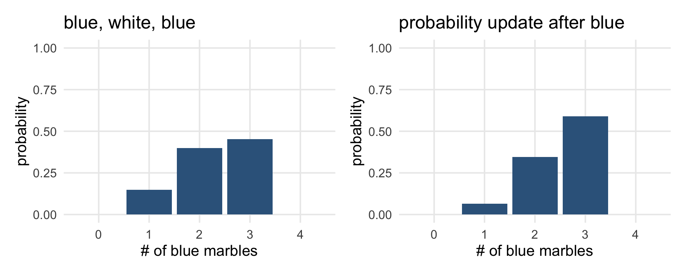

library(tidyverse)
library(gt)
library(patchwork)
library(here)
source(here("_defaults.R"))
listening
In the analogy, models are “Small”, self-contained worlds.
Within the small world, all possibilities are nominated.
Garden of forking paths.
I was thinking of working out the probabilities by doing random sampling…
Generating the marble dataframe
tibble(
blue_marbs = 0:4,
white_marbs = 4 - blue_marbs
) |>
rowwise() |>
mutate(
marbles = list(c(rep("blue", blue_marbs), rep("white", white_marbs)))
) ->
marblesmarbles |>
gt()| blue_marbs | white_marbs | marbles |
|---|---|---|
| 0 | 4 | white, white, white, white |
| 1 | 3 | blue, white, white, white |
| 2 | 2 | blue, blue, white, white |
| 3 | 1 | blue, blue, blue, white |
| 4 | 0 | blue, blue, blue, blue |
Table 1:
The marble sampling distributions
In retrospect, I’m glad I did this, because I thought we were sampling without replacement.
Here’s a function that will repeatedly sample from a set of marbles, and compare the result to a reference group.
sampling_df <- function(marbles, n = 1000, size = 3, pattern = c("blue", "white", "blue")){
sampling_tibble <- tibble(samp = 1:n)
sampling_tibble |>
mutate(
chosen = map(samp, ~sample(marbles, size = 3, replace = T)),
match = map_lgl(chosen, ~all(.x == pattern))
) |>
summarise(prop_match = mean(match))->
sampling_tibble
return(sampling_tibble)
}- 1
- I’ll capture everything within a tibble.
- 2
-
Rowwise, sample from
marbleswith replacement. - 3
-
Return
TorFif the sequence matches the pattern exactly. - 4
-
The
mean()of theT,Fcolumn to get the proportion that match.
sampling_df(
marbles = marbles$marbles[[4]],
n = 5000
) # A tibble: 1 × 1
prop_match
<dbl>
1 0.140marbles |>
ungroup() |>
mutate(
prob = map(marbles, ~sampling_df(.x, n = 10000))
) |>
unnest(prob) |>
mutate(norm_probs = prop_match/sum(prop_match))->
marble_probsmarble_probs |>
ggplot(aes(blue_marbs, norm_probs))+
geom_col(fill = "steelblue4")+
labs(
title = "blue, white, blue",
x = "# of blue marbles",
y = "probability"
) +
ylim(0,1)->probs1
probs1
Updating probabilities
What if we draw one more blue
marble_probs |>
mutate(new_obs_prob = blue_marbs / sum(blue_marbs),
posterior_prob = norm_probs * new_obs_prob,
posterior_norm = posterior_prob/sum(posterior_prob))->
marble_probsmarble_probs |>
ggplot(aes(blue_marbs, posterior_norm))+
geom_col(fill = "steelblue4")+
ylim(0,1)+
labs(
title = "probability update after blue",
x = "# of blue marbles",
y = "probability"
) ->
probs2
probs1 | probs2